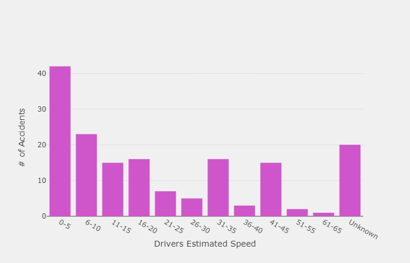
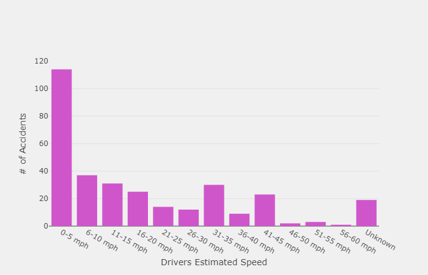

Home
Visualizations
Accident Map
Bicycle & Pedestrian Accident Factors | Age
Bicycle & Pedestrian Accident Factors | Speed
Bicycle & Pedestrian Accident Factors | Comparison Charts
Interactive Bike Charts
Interactive Pedestrian Charts
More Information
About the Project
Database Information
Technical Documentation
Bicycle & Pedestrian Accident Factors | Speed

